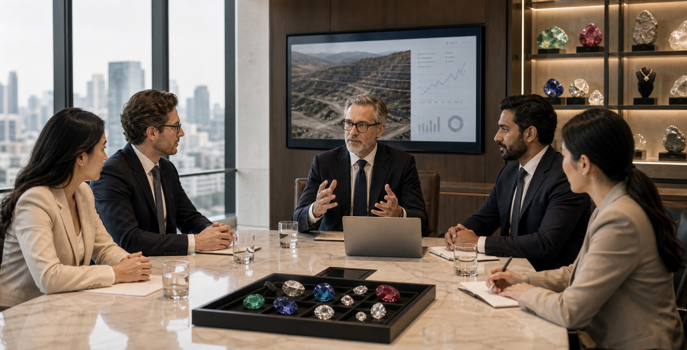

Investors
A premium brand story supported by disciplined operating layers.
Our investor presentation combines brand value with operational structure, showing how sourcing, processing, craftsmanship, and distribution can sit inside a connected long-term business model. This page is designed to support high-level positioning, report access, and conversations with partners who want both vision and commercial discipline.

Cox Walker Jewelry LLC is positioned around the idea that value is created not only through access to remarkable stones, but through stewardship across the full chain of recovery, refinement, cutting, design, and market presentation. That integrated approach supports stronger quality control, clearer storytelling, and multiple commercial pathways.
For investors and strategic partners, the business offers exposure to a premium product category shaped by provenance, scarcity, and branded luxury potential. The framework below is intentionally simple so it can be updated with audited metrics, annual highlights, capital requirements, and forward-looking growth materials as the company evolves.